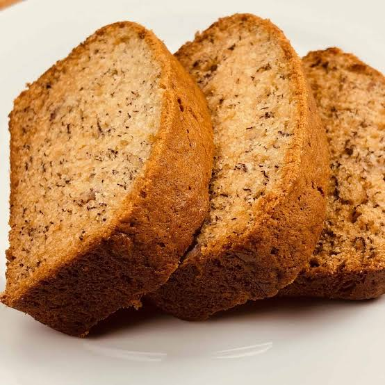

Home
Banana Bread

A sweet, moist quick bread made from mashed ripe bananas, flour, sugar, and butter or oil
Ingredients>
- 1 1/2 cups all-purpose flour
- 1 tsp baking soda
- 1/4 tsp salt
- 1/2 tsp of ground cinnamon (optional)
- 1/2 cup of melted unsalted butter (or neutral cooking oil)
- 3/4 cup brown sugar
- 2 large eggs, beaten
- 1 tsp vanilla extract
Instructions>
- Preheat and Prep: Preheat your oven to 350°F.
Then grease a standard 9x5-inch loaf pan with butter or cooking spray.
- Mix Dry Ingredients: Whisk the flour, baking soda, salt, and cinnamon together in a large bowl.
- Mix Wet Ingredients: In a separate medium bowl, combine the melted butter and brown sugar.
Stir in the beaten eggs, vanilla extract, and mashed bananas until smooth.
- Combine: Pour the wet banana mixture into the dry flour mixture.
Stir gently with a spatula just until combined and no dry flour streaks remain. Do not overmix.
- Bake: Pour the batter evenly into your prepared loaf pan.
Bake for 55 to 65 minutes, or until a toothpick or wooden skewer inserted into the center comes out clean.
- Let cool: Let the bread cool inside the pan for 10 minutes.
Transfer it to a wire cooling rack to cool completely before slicing.